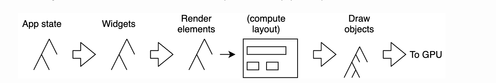
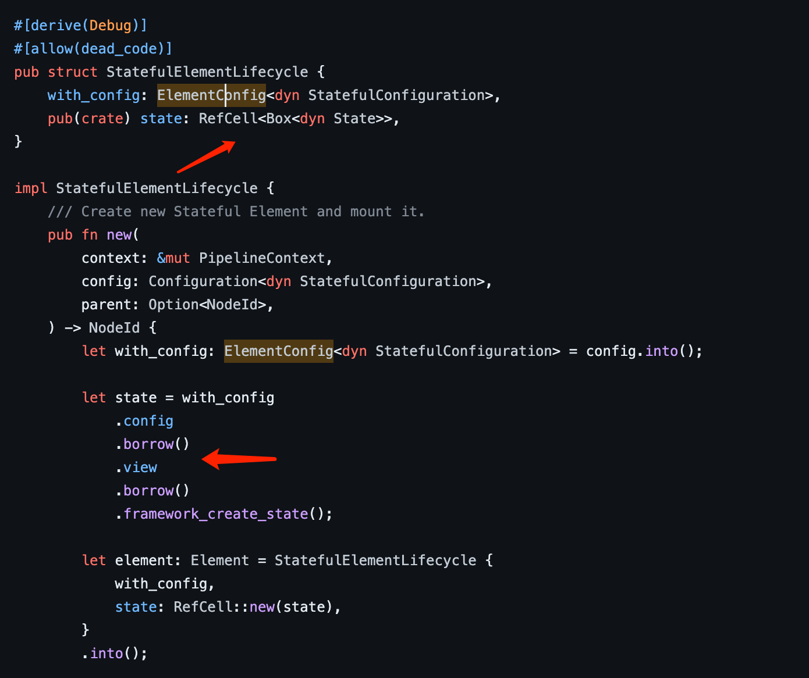
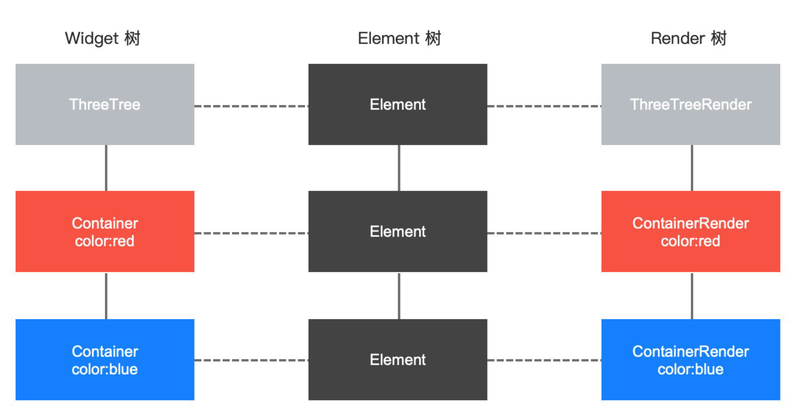

#几点思考
- 当人们谈论
面向对象缺点的时候，他们的潜台词多半是想说实现继承的问题； - Rust语言是面向对象的吗，为什么在Rust中实现简单点链表都很困难？
- 除了
面向对象以外，是否有其它更高效硬件友好的设计思路，来实现良好的封装和内聚？
#开端
最近我在设计一款基于Rust的UI框架,我给它定义了几个设计目标：
-
它应该是一个标准的响应式UI框架；
-
同时它必须支持
Retained Mode； -
使用原生Rust代码配置组件和界面，类似
SwiftUI/Compose； -
跨平台,使用
skia/webgpu作为渲染后端； -
在可预见的将来，它应该能够很容易的支持各种
脚本/动态语言集成；
#设想很美好现实很残酷
咋一看， 整个项目雄心万丈！！！ 目标远大。。
首先整个项目是参考flutter的渲染管线设计，如下图所示：

这里的巨坑在于,如何在Rust中实现上图的第三颗树Render elements + tree；在设计的第一个版本，我想当然耳的照搬flutter的设计, 尝试在Rust中模拟了一个多重继承+多态的架构：
- 使用
Varaint[1] +Box + dyn trait模拟多态； - 使用
Rc<RefCell<T>>跳开 Rust 对可变引用的严格约束[2]； - 使用
Trait 默认实现来模拟实现继承；
随着代码的推进，最大的槽点出在对Rc<RefCell<T>>的使用，以及实现继承带来的调用栈困境：
- 使用面向对象来设计
树型结构，最经典的案例就是浏览器的DOM； - 这往往要求，某个算法过程在
树型结构的不同节点间来回调用，对象重入[3]在所难免； - 这就要求你不能简单的对
树型结构的节点对象使用Rc<RefCell<T>>，你需要精心设计控制节点对象的哪些字段在运行时可变读写[4]：

这让我肥肠蛋痛～～ 更不用说，后续开发一直要和各种 树型结构 打交道，这让我一度想放弃这个伟大的项目！！！！！
虽然我一如既往的没有常性，但是这次运气好，那天刚好翻到一个 Rust crate[5] 它给了我灵感；
- 既然添加间接层是解决软件架构的不二法门；
- 既然对象的读写字段分散到不同的多态对象中，很难管理；
我草， 为啥不把这些数据字段放到一个统一的表中管理 ！！！
在这里不得不说大龄程序员就是见多识广，妥妥的抄袭几十年前C语言的优化方案。但是我绝对不会承认这点，我将努力向你证明这是更高级的数据表结构，将点燃新的rust设计范式 —— 毕竟毛主席告诉我们，事物都是螺旋往复向上发展的[6]…[7]。
#发展
继续沿着这个思路思考下去：
- 我的问题域是，我需要在内存中为渲染管线构建多颗渲染树[8]；
- 其次树与树节点间是一一对应的，例如：Widget -> Element -> RenderObject;
 - 如果把横向的三个节点数据放到一行，给这行一个唯一ID来表示这个映射关系；
- 这样我就得到了一个，二维内存表；
- 模仿数据库的SQL语法，给这个二维表提供一个统一的
读写/更新/删除操作接口。。。
等等。。。。这尼玛不就是ECS模式，仙人板板，搞了半天重新发明了一遍轮子。
这太没面子了我绝不承认这是ECS；看着这个讨厌的Entitiy，我觉得它很不程序员，所以我决定把它叫做 Dynamic Object ID
是的这个内存表，你可以把它认为是一个动态对象系统，因为：
- 你可以动态创建一个对象，这个时候它是一个Duck类型[9]；
- 对象ID就是数据表的某行，这个时候除了Row ID，其它列都为空；
- 你可以动态修改对象表现类型，例如：如果你希望它是个Element对象，你可以在Element列写入Element对象数据；
- 既要也要，这个动态类型既可以是一个Element对象也可以是一个RenderObject对象。只需重复上一步动作填入RenderObject对象数据；显然这个动态对象是一个既要也要的渣女：（，文明点不带性别对立的说法，我们有了多重继承体系，结合
System[10] 顺带把实现继承也实现了。 - 如上所述，你可以针对某列数据做
动态方法绑定。它既像面向对象语言中的对象方法，又和它有一些区别，更强大。它是针对整个类型数据做统一操作，更加cpu cache友好更高效； - 理论上，你也可以针对某个动态对象编写
动态方法绑定； - 同时它完美解决了前述Rust的痛点，只要你让这张表：
- ～Sync + ～Send[11]；
- 对它使用
Rc<RefCell<T>>；
我为这个模式取了一个新名字 DLR[12]。
#高潮
一直认为没有高潮的运动，是不完整的。所以最后必须颅内高潮，发散下思维：
遵循Rust的伟大实践…… 我们这里将
enum 类型统称为Variant。 ↩︎Rust为了实现严格的所有权系统以及并发重入安全,同一个变量只允许有一个可变引用存在。 ↩︎
成也萧何，败也萧何。solidity一定很羡慕Rust没有重入的问题：））））） ↩︎
也就是在运行时调用
Rc<RefCell<T>>上的borrow以及borrow_mut方法。 ↩︎也可能是马列恩，其中一个大爷说的。感谢我的大学
马列老师，把那么枯燥的教条主义课程讲解得如此的深入浅出而不那么教条主义；到现在还能指引我的思维方式。 ↩︎也可能螺旋向下，比如归零币 ～～ ↩︎
为什么需要多颗渲染树，这涉及到渲染优化和增量更新，具体可以参考
raphlinus的这篇文章；如果你熟悉编译原理，它也能类比编译各个阶段的抽象树结构，更恰当的类比是各种动态语言运行时的状态机。 ↩︎我不打算告诉你，什么是鸭子类型～～ 如果你用过 python / ruby 当我没说。 ↩︎
当然，我给它重新取了个名字叫做：动态方法绑定。 ↩︎
说人话：让这张表既不能在线程间传递，也不是同步安全的 ↩︎
希望微软不会找我要版权费。。。。。 ↩︎